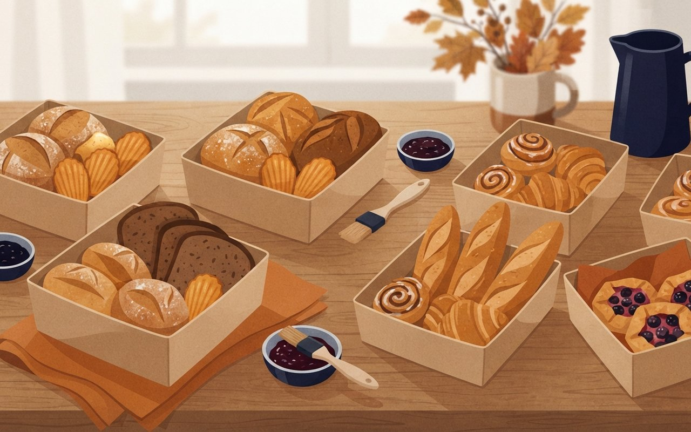
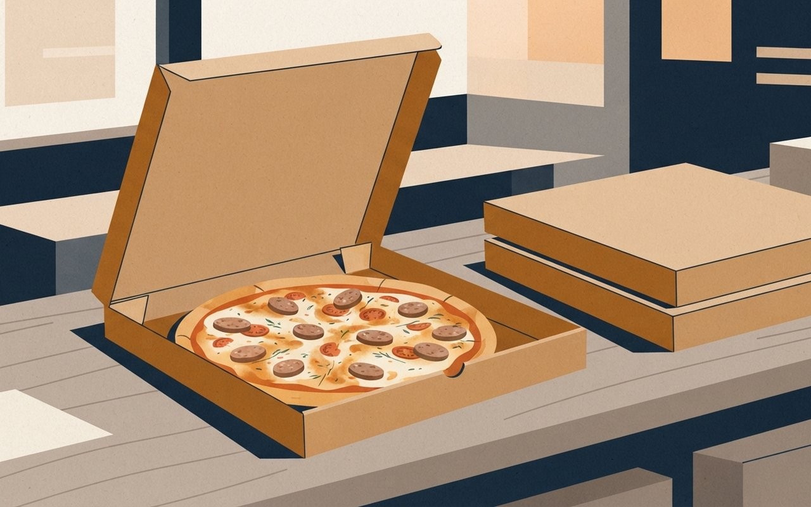
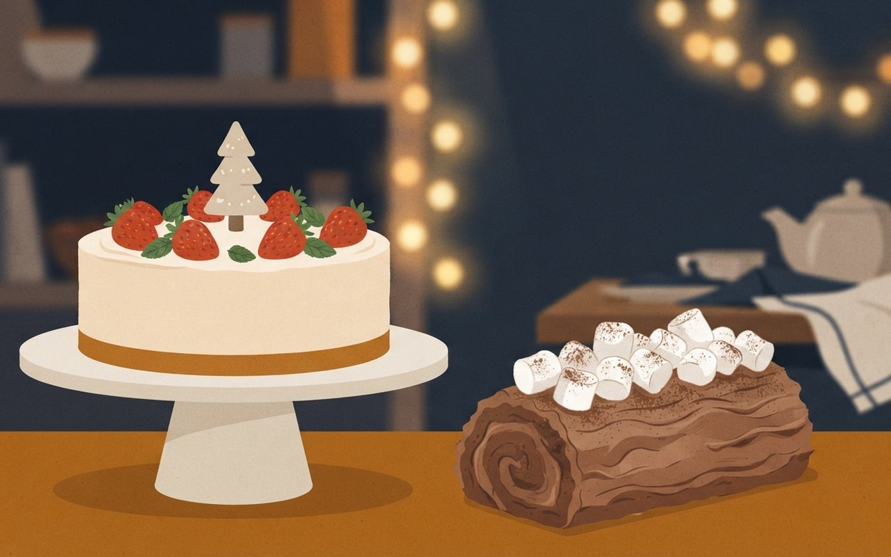

🎧 낭독 원고 보기
11월 19일 목요일, 푸드 브리프입니다.
빵 축제 입장 줄이 700미터를 넘었습니다. 성심당과 풍년제과 등 빵집 110여 곳이 모인 K-베이커리 페스티벌이 광화문광장에서 20일 금요일까지 열리는데, 첫날 성심당은 판매 20분 만에 제품마다 한 사람에 하나씩으로 수량을 묶었습니다. 30분에 500명씩 받는 무료 패스트패스 약 2만 자리는 한 시간 만에 찼습니다. 줄이 부담이면 배민 앱으로 미리 주문해 픽업존에서 받을 수 있습니다.
수능을 마친 수험생은 수험표를 챙기세요. 샤브올데이는 22일까지 수험생 본인을 1만 3,900원에 받고, 쿠우쿠우와 올웨이즈샤브는 23일까지 7천 원을 깎아 줍니다. 동대문엽기떡볶이는 22일까지 2006년에서 2008년 사이 태어난 응모자 5천 명에게 1만 4천 원 쿠폰을 줍니다.
레스토랑도 할인합니다. 라그릴리아는 30일까지 5만 원 이상 주문하면 인기 그릴 메뉴를 반값에, 63빌딩의 워킹온더클라우드 등 세 곳은 지정 코스를 40% 깎아 줍니다. 매드포갈릭은 다음 달 6일까지 30%, 최대 3만 원입니다.
도미노피자는 20일부터 22일까지 14세에서 34세 앱 회원이 포장 주문하면 M과 L 피자를 반값에 줍니다. 수험표는 필요 없습니다.
크리스마스 케이크 예약도 열렸습니다. 파리바게뜨는 다음 달 19일까지 예약을 받고 앱에서 최대 30%를 깎아 주며, 배스킨라빈스는 19일부터 일반 사전예약을 시작했습니다. 팀홀튼은 국내 첫 크리스마스 케이크를 30일까지 15% 할인해 예약받습니다.
지금까지 푸드 브리프였습니다. 할인 조건과 기간은 바뀔 수 있으니 방문과 주문 전에 매장과 앱 안내를 확인해 주세요.
麵
중기부 행사
K-베이커리 페스티벌 첫날 줄 700m — 빵집 110여 곳, 성심당은 20분 만에 '제품당 1인 1개', 20일(금)까지
중소벤처기업부가 주최하고 대한제과협회가 주관하는 'K-베이커리 페스티벌 인 광화문'이 18일 광화문광장에서 열렸다. 대전 성심당·전주 풍년제과와 파리바게뜨·뚜레쥬르 등 빵집 110여 곳이 참여했고, 오픈 40분 전인 18일 오전 11시 20분 입장 줄이 700m를 넘었다(아시아경제). 행사는 20일(금)까지다(서울신문).
성심당은 처음엔 구매 수량 제한이 없다가 판매 약 20분 뒤 제품마다 1인 1개로 묶었다. 하루 물량은 보문산메아리·순수마들렌 각 2,000상자, 초코튀소 1,500개다. 주최 측이 네이버로 받은 30분당 500명 무료 패스트패스 약 2만 자리는 1시간 만에 찼고, 오후 12시 40분 현장 대기 등록은 550명을 넘었다(아시아경제). 배민 앱으로 미리 주문해 받는 픽업존에는 성심당·김영모과자점 등 12개 브랜드가 들어왔다(한국경제).
- 기간·장소11/18~20(금) · 서울 광화문광장 ⚠ 운영 시간은 기사에 없음
- 참여빵집 110여 곳 — 성심당·풍년제과·파리바게뜨·뚜레쥬르 등
- 첫날 줄18일 오전 11:20 입장 줄 700m 이상 · 12:40 현장 대기 550명 이상
- 성심당판매 약 20분 뒤 제품당 1인 1개 · 하루 보문산메아리·순수마들렌 각 2,000상자, 초코튀소 1,500개 · 케이크류 없음
- 풍년제과부스 1만 개 · 배달 존 5,000개
- 줄 피하기배민 픽업존(12개 브랜드, 앱 주문 뒤 수령) · 패스트패스(30분당 500명, 약 2만 자리 1시간 만에 마감)
🍜 알고 보면 달라지는 것
패스트패스는 이미 다 찼기 때문에 지금 갈 수 있는 길은 현장 대기 아니면 배민 픽업이다. 일부 빵집은 혼잡을 나누려고 몇몇 제품을 배민 픽업으로만 판다(한국경제). 첫날엔 패스트패스 입장이 먼저라 12시 40분까지 현장 대기자가 한 명도 들어가지 못했다. 빵값은 기사에 나오지 않았다.
아시아경제 — 첫날 줄 700m·성심당 수량 한국경제 — 배민 픽업존 서울신문 — 20일까지
줄 700m·패스트패스·현장 대기 550명·성심당 1인 1개·하루 물량·풍년제과 물량은 아시아경제(11/18 14:32) 단일 르포 · 110여 곳은 아시아경제·서울신문(11/19 00:31) 일치 · 배민 픽업존 12개 브랜드·케이크류 없음은 한국경제(11/18 17:25) · 기간 11/18~20은 아시아경제·서울신문 일치 · 운영 시간·가격은 기사에 없음 (확인 2026-11-19)
광화문 빵 축제 줄 700m,
20일(금)까지 열려요
광화문광장에 빵집 110여 곳이 모였어요. 18일 첫날 입장 줄이 700m를 넘었고, 성심당은 제품마다 1인 1개로 묶었어요.
광화문광장@서울 종로
11/18~11/20
550명+|첫날 12:40 현장 대기 등록
Close-up of an assortment of freshly baked breads, golden madeleines and small pastries arranged in plain kraft paper boxes on a wooden table, soft late-autumn daylight, no people, no text, no logos, no signage

試
뷔페·분식
수험생 외식 할인 ① — 샤브올데이 22일까지 1만 3,900원, 쿠우쿠우·올웨이즈샤브 23일까지 7,000원, 엽떡 쿠폰 5,000명
샤브올데이는 19~22일 전 매장에서 수험표 원본을 낸 수험생 본인에게 샤브샤브와 샐러드바를 1만 3,900원(초등학생 요금)에 준다. 수험표 한 장에 한 번이고, 함께 온 사람은 정가이며 다른 할인과 겹쳐 쓸 수 없다(뉴스1·이데일리).
초밥 뷔페 쿠우쿠우와 샤브 뷔페 올웨이즈샤브는 19~23일 브랜드 앱 쿠폰을 받은 뒤 실물 수험표와 신분증을 보여 주면 7,000원을 깎아 준다(한국경제). 동대문엽기떡볶이는 22일까지 네이버로 응모한 2006~2008년생 가운데 5,000명에게 1만 4,000원 쿠폰을 주고, 당첨은 30일 발표한다(한국경제·이데일리).
- 샤브올데이11/19~22 · 전 매장 · 수험생 본인 1만 3,900원(13,900원) · 수험표 원본, 1장 1회, 중복 할인 불가
- 쿠우쿠우·올웨이즈샤브11/19~23 · 7,000원 할인 · 앱 쿠폰 + 실물 수험표·신분증 (한국경제 단독 보도)
- 동대문엽기떡볶이11/22까지 네이버 응모 · 2006~2008년생 · 5,000명 1만 4,000원 쿠폰 · 11/30 발표, 브랜드 앱에서 사용
- 확인⚠ 변동 가능 · 방문 전 매장·앱 안내 확인
🍜 알고 보면 달라지는 것
대부분 '실물' 수험표를 요구한다 — 사진으로는 안 되는 곳이 있으니 버리지 말고 챙기자. 샤브올데이는 수험생 본인만 할인이라 가족이 함께 가면 나머지는 정가다. 엽떡은 바로 깎아 주는 게 아니라 응모 뒤 추첨이다. 정가는 기사에 없어 할인율은 알 수 없다.
뉴스1 — 샤브올데이 올데이 스튜던트 한국경제 — 외식업계 수험생 할인 이데일리 — 수험생 혜택 모음
샤브올데이 기간·1만 3,900원·조건은 뉴스1(11/18 09:16)·이데일리(11/18 18:45) 일치, '초등학생 요금'은 이데일리 · 쿠우쿠우·올웨이즈샤브 7,000원은 한국경제(11/18 14:00) 단일 · 엽떡 조건·5,000명·1만 4,000원은 한국경제(11/18·11/19)·이데일리 일치, 발표일 11/30은 한국경제 · 정가는 기사에 없음 (확인 2026-11-19)
수험생 뷔페 할인,
수험표 꼭 챙기세요
샤브올데이는 22일까지 수험생 본인을 1만 3,900원에 받아요. 쿠우쿠우·올웨이즈샤브는 23일까지 7,000원 할인, 엽떡은 5,000명에게 쿠폰을 줘요.
11/19~11/22
13,900원|샤브올데이 수험생 가격
A steaming shabu-shabu hot pot on a table with thin sliced meat, mushrooms and leafy greens on small plates, a blank folded sheet of paper with no writing placed beside the bowls, warm evening restaurant light, no people, no readable text, no logos
宴
레스토랑·코스
수험생 외식 할인 ② — 라그릴리아 30일까지 인기 그릴 메뉴 반값, 63빌딩 레스토랑 3곳 코스 40%·매드포갈릭 30%(한국경제 보도)
라그릴리아는 30일까지 수험표나 응시원서 접수증을 보여 주고 5만 원 이상 주문하면 '온더스톤 스테이크 부채살'·BBQ 폭립 플래터 등 인기 그릴 메뉴를 반값에 준다(테이블당 1회, 카카오톡 채널 추가). 같은 회사의 스트릿은 밀크티나 레몬에이드 1잔을 무료로 준다(한국경제·연합뉴스).
여의도 63빌딩의 워킹온더클라우드·슈치쿠·백리향은 19~30일 수험생 본인에게 지정 코스를 40% 깎아 준다(예약 때 알리고 수험표·신분증 지참). 매드포갈릭은 19일~12월 6일 실물 수험표를 보이면 전 메뉴 30%, 최대 3만 원을 할인한다(한국경제).
- 라그릴리아~11/30 · 5만 원 이상 주문 시 인기 그릴 메뉴 50% · 수험표 또는 응시원서 접수증 · 테이블당 1회
- 스트릿~11/30 · 밀크티 또는 레몬에이드 1잔 무료
- 63빌딩 3곳11/19~30 · 워킹온더클라우드·슈치쿠·백리향 지정 코스 40% · 예약 시 고지, 수험표·신분증 (한국경제 단독 보도)
- 매드포갈릭11/19~12/6 · 실물 수험표 · 전 메뉴 30%(최대 3만 원) (한국경제 단독 보도)
- 확인⚠ 변동 가능 · 방문 전 매장·앱 안내 확인
🍜 알고 보면 달라지는 것
할인율이 커 보여도 조건이 다르다. 라그릴리아 반값은 5만 원 이상 주문에 한 테이블 한 번이고, 매드포갈릭 30%는 3만 원이 상한이라 10만 원 넘게 먹으면 30%가 안 된다. 63빌딩은 예약 단계에서 할인을 말해야 한다. 기간이 가장 긴 곳은 매드포갈릭(12/6)이라 연말 가족 외식으로 미뤄도 된다.
한국경제 — 매드포갈릭·라그릴리아 연합뉴스(한민족센터 전재) — 라그릴리아·스트릿
라그릴리아 30일·5만 원 이상·인기 메뉴 2종 반값·테이블당 1회·카카오톡 채널·스트릿 음료는 한국경제(11/18 14:00·11/19 08:49)·연합뉴스(11/13 09:45, 한민족센터 전재본으로 확인)·이데일리(11/18 18:45) 일치 · 63빌딩 3곳 40%는 한국경제(11/18) 단일 · 매드포갈릭 30%·최대 3만 원·12/6은 한국경제(11/19) 단일 · 정가는 기사에 없음 (확인 2026-11-19)
수험생 레스토랑 할인,
인기 그릴 메뉴 반값
라그릴리아는 30일까지 5만 원 이상 주문 때 인기 그릴 메뉴를 반값에 줘요. 63빌딩 레스토랑 3곳은 코스 40%, 매드포갈릭은 30%(최대 3만 원)예요.
라그릴리아(5만 원 이상):50|63빌딩 지정 코스:40|매드포갈릭(최대 3만 원):30
A sizzling beef steak on a hot stone plate next to a platter of barbecue pork ribs on a restaurant table by a tall window overlooking a city river at dusk, glasses of orange juice and sparkling water on the table, no wine, no alcohol, warm celebratory dinner mood, no people, no text, no logos
半
피자 · 포장 주문
도미노피자 20~22일 포장 반값 — 14~34세 앱 회원, 수험표 없어도 M·L 50%
도미노피자가 수능 다음 날인 20~22일 사흘 동안 '1434 피자어택'을 연다. 도미노 앱 회원 가운데 만 14~34세가 포장 주문하면 M·L 피자를 50% 깎아 준다. 수험표가 없어도 나이만 맞으면 된다(한국경제).
예를 들어 '레몬 버터 더블 살시챠' L은 3만 5,400원에서 1만 7,700원이 된다(한국경제). 할인은 포장 주문에만 적용된다(한국경제·이데일리). 이데일리는 대상을 앱 '매니아' 회원으로 적었다.
- 기간11/20(금)~22(일)
- 대상14~34세 도미노 앱 회원 ⚠ 회원 등급 표기 매체별 차이(이데일리 '매니아')
- 조건포장 주문만 · M·L 피자 50% · 수험표 불필요
- 예시레몬 버터 더블 살시챠 L 3만 5,400원 → 1만 7,700원(17,700원)
🍜 알고 보면 달라지는 것
이번 주 수험생 할인 가운데 수험표가 필요 없는 드문 행사다. 대신 배달이 아니라 포장만이라 매장까지 가야 한다. 나이 확인 방식은 기사에 없다.
한국경제 — 1434 피자어택 이데일리 — 도미노 매니아 회원
기간·14~34세·포장·M·L 50%는 한국경제(11/18 14:00·11/19 08:49)·이데일리(11/18 18:45) 일치 · 수험표 불필요·가격 예시 3만 5,400원→1만 7,700원은 한국경제(11/18) 단일 · 회원 표기는 이데일리만 '매니아' (확인 2026-11-19)
도미노 포장 피자 반값,
14~34세 앱 회원
20~22일 사흘간 14~34세 앱 회원이 포장 주문하면 M·L 피자가 50%예요. 수험표는 없어도 되고, L 3만 5,400원 피자가 1만 7,700원이 돼요.
17,700원|L 피자 포장 할인가
11/20~11/22
A large freshly baked pizza with sausage slices and melted cheese in a plain cardboard takeout box held on a shop counter, a second box stacked beside it, bright casual evening light, no people, no text, no logos, no brand packaging

聖
연말 사전예약
크리스마스 케이크 예약 — 파리바게뜨 12월 19일까지 앱 최대 30%, 배스킨라빈스 19일 일반 예약 시작, 팀홀튼 첫 케이크 15%
파리바게뜨는 11월 11일부터 12월 19일까지 홀리데이 케이크 사전예약을 받는다. 파바앱은 최대 30%, 해피오더·카카오톡 예약하기·선물하기는 최대 20%, 요기요 최대 1만 1,000원, 땡겨요·당근 최대 1만 원, 배민 최대 8,000원(선착순)을 깎아 주고, 케이크는 12월 21~25일 고른 매장에서 받는다. 딸기 '베리밤' 라인은 6종으로 늘었다(헤럴드경제·뉴스1).
배스킨라빈스는 아이스크림 케이크 10종을 내고, 최대 40% 혜택의 이벤트 예약(18일 종료)에 이어 11월 19일~12월 15일 일반 사전예약(최대 30%)을 받는다. 팀홀튼은 국내 첫 크리스마스 케이크 5종을 30일까지 1차 예약하면 15% 할인한다(연합뉴스).
- 파리바게뜨예약 11/11~12/19 · 파바앱 최대 30% · 픽업 12/21~25 · 배달앱별 최대 8,000~1만 1,000원
- 배스킨라빈스10종 · 일반 사전예약 11/19~12/15 최대 30% · 카카오톡 선물하기 예약 11/16부터
- 팀홀튼국내 첫 크리스마스 케이크 5종 · 1차 예약 11/16~30 15% · 한정 틴 케이스 (배스킨라빈스·팀홀튼은 연합뉴스 단독 보도)
- 가격세 브랜드 모두 케이크 가격은 기사에 없음 ⚠ 변동 가능
🍜 알고 보면 달라지는 것
'최대 30%'는 채널·케이크마다 다른 할인의 가장 큰 값이라 원하는 케이크가 30%라는 뜻은 아니다. 파리바게뜨는 예약한 매장에서만 받을 수 있어 매장을 신중히 골라야 하고, 받는 날도 12월 21~25일로 정해져 있다. 배스킨라빈스의 최대 40% 이벤트 예약은 18일에 끝났다.
헤럴드경제 — 파리바게뜨 홀리데이 케이크 연합뉴스(한민족센터 전재) — 배스킨라빈스·팀홀튼 뉴스1 — 파리바게뜨 사전예약
파리바게뜨 예약 11/11~12/19·최대 30%는 헤럴드경제(11/10 10:59)·뉴스1(11/10 09:17) 일치, 채널별 할인·픽업 12/21~25·베리밤 6종은 헤럴드경제 단일 · 배스킨라빈스·팀홀튼은 연합뉴스(11/16 10:04) 단일(한민족센터 전재본으로 확인) · 케이크 가격은 세 기사 모두 없음 (확인 2026-11-19)
크리스마스 케이크
사전예약 열렸어요
파리바게뜨는 12월 19일까지 예약받고 앱에서 최대 30% 할인해요. 배스킨라빈스는 19일 일반 예약을 열었고, 팀홀튼은 30일까지 15%예요.
파리바게뜨 예약 마감|12/19|파바앱 최대 할인|30%
A strawberry cream cake decorated with fresh strawberries and a small sugar pine tree on a cake stand, next to a chocolate log cake topped with marshmallows, soft warm Christmas lights blurred in the background, no people, no text, no logos, no brand packaging
